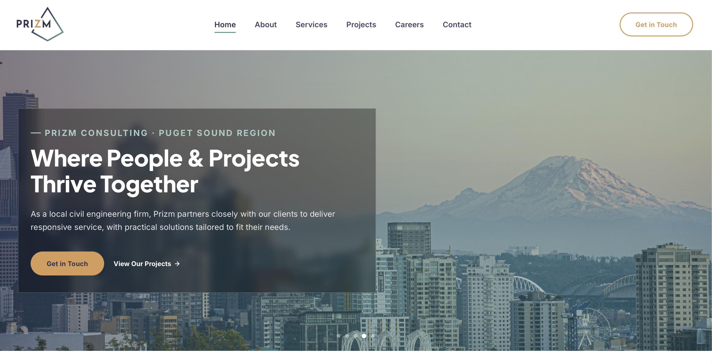
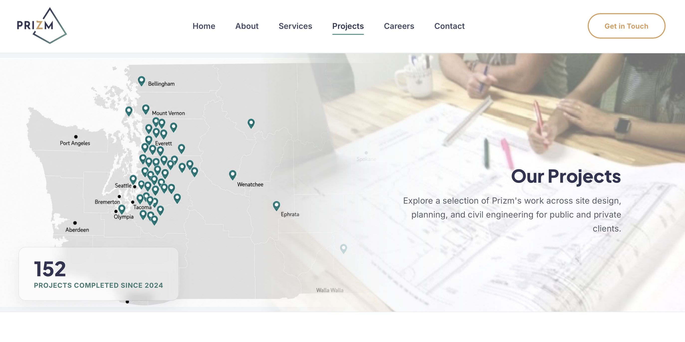
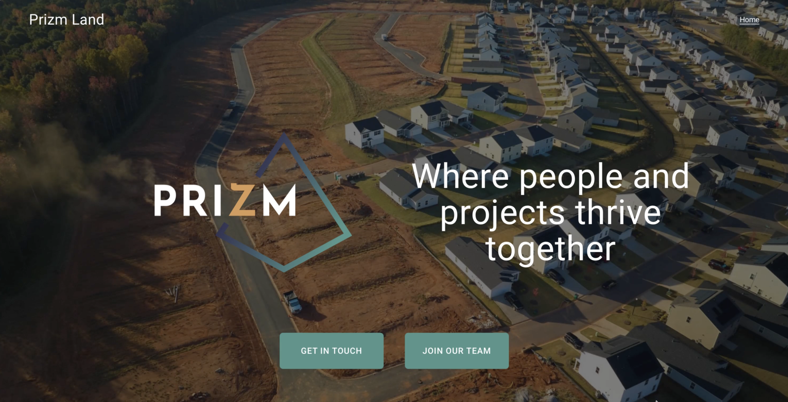
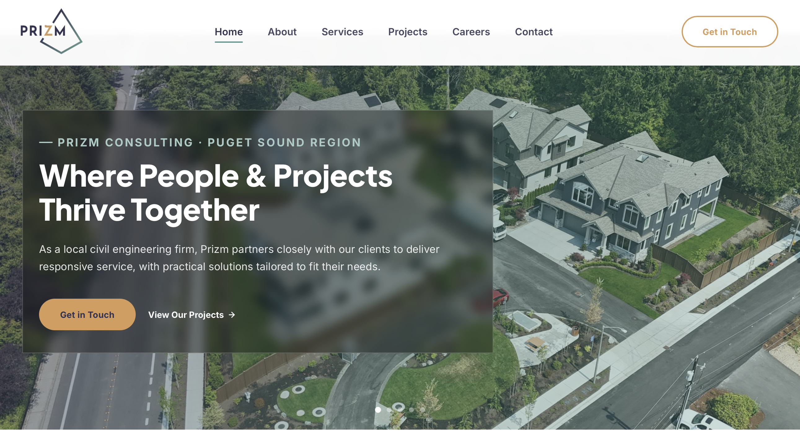
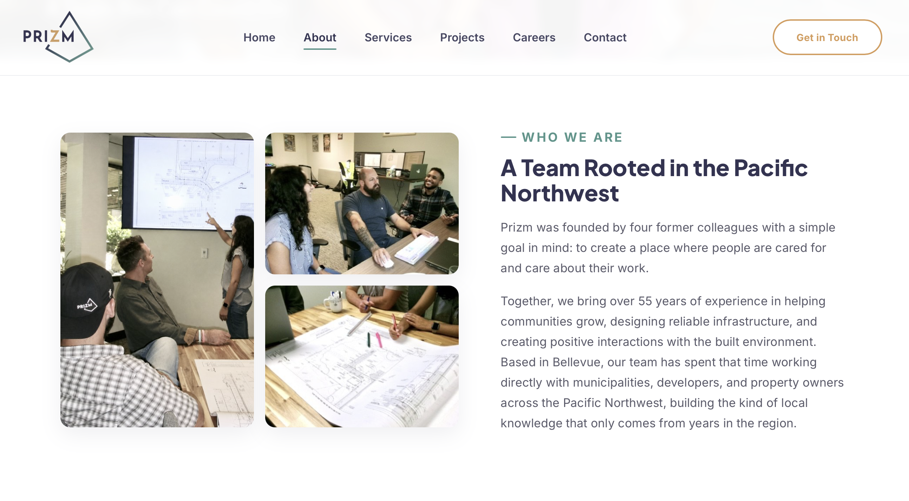
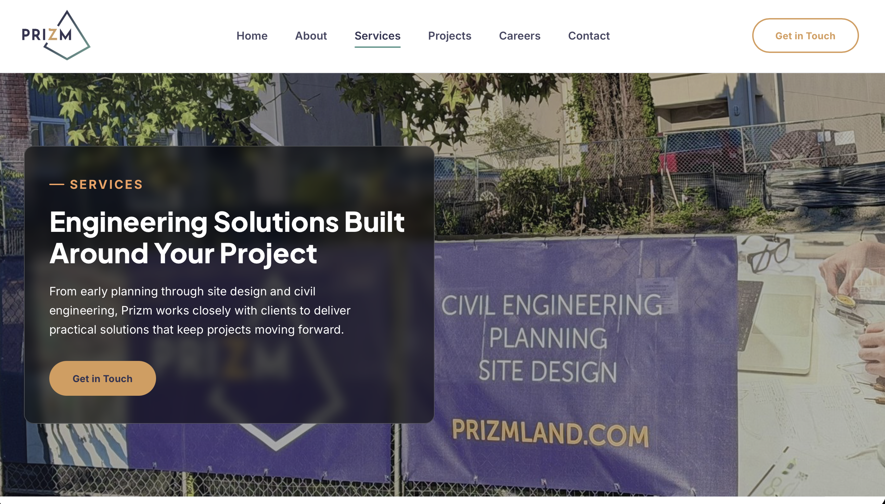
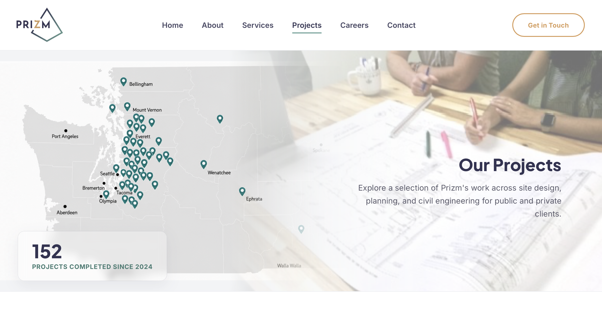
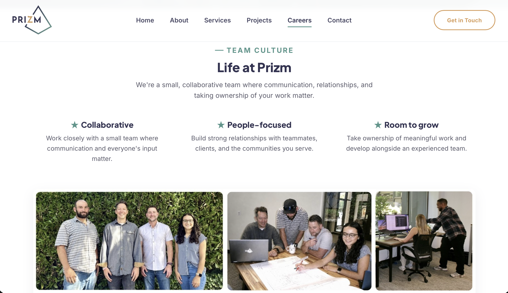
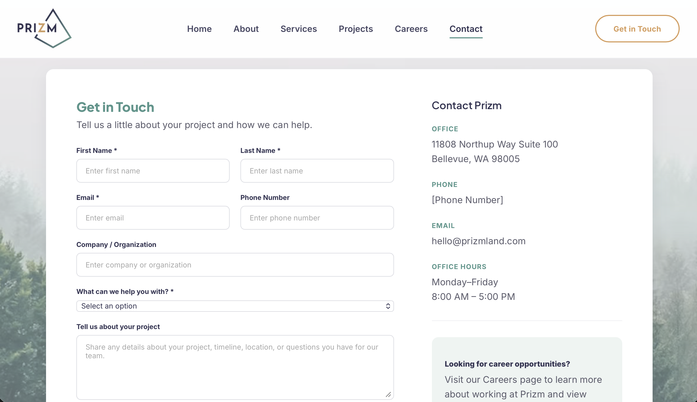

A ground-up redesign and hand-built rebuild of a civil engineering firm's website, from usability research to a working six-page prototype, as the sole design and development intern.
UX/UI Designer & Front-End Developer (sole intern)
Summer internship, now ongoing part-time
Ease of finding information: 3.67 → 5.0 out of 5 after the redesign


Prizm Consulting is a small civil engineering firm in Bellevue, WA. Their site was outdated and thin on content, so I redesigned and hand-built a new one, working directly with the owners.
Prizm's site undersold the business. It listed services but showed no completed projects, no team information, and no phone number.

I reviewed four comparable engineering firms to find where Prizm could stand out.
Clear homepage messaging and straightforward service descriptions
Communicate Prizm's services and value proposition more clearly
Intuitive navigation and streamlined contact experience
Create a clear, accessible path for potential clients to get in touch
Prominent calls to action throughout the website
Establish a clear primary CTA without overwhelming users
Strong credibility through project showcases and company expertise
Highlight completed projects, client testimonials, and team expertise
The analysis revealed opportunities to strengthen Prizm's credibility, improve content clarity, and create more intuitive user pathways while keeping the site simple and easy to navigate.
I tested Prizm's live site with 6 current and past clients, the audience the redesign needed to serve. I moderated each session over Zoom: participants completed realistic tasks, then gave survey ratings and open-ended feedback. With a small sample, I treated results as directional.
What was workingNavigation
Professional appearance
Understanding Prizm
Trustworthiness
Finding desired information
Navigation wasn't the problem. Content depth was.
I grouped the feedback into five recurring themes.
Projects & Experience
Trust & Credibility
Services & Understanding
Careers & Culture
Website Usability
| Projects & Experience | Trust & Credibility | Services & Understanding | Careers & Culture | Navigation & Accessibility |
|---|---|---|---|---|
| Wanted more examples of past work. | Looked for testimonials, team info, and company background. | Understood the services but wanted more detail. | Wanted culture and people, without heavy recruiting. | Liked concise content, but layout issues and limited contact options created friction. |
With a small sample, I mapped the prospective client's journey instead of building a persona. Each stage matched a gap from the research:
Discover → Understand Services → Evaluate Experience → Build Trust → Contact
In my initial stakeholder meetings, I learned that serving both public and private sector clients is a core part of what Prizm does, but the original site never mentioned it.
Added a section to the home page highlighting Prizm's public and private sector work.
Users wanted evidence of completed work.
Added Featured Projects to the homepage and built dedicated Public/Private project pages.
Users wanted more detail on individual services.
Made service cards clickable, each with real jobsite photography.
Users wanted to know the people behind Prizm.
Expanded the About page's team section and added Team Culture to Careers.
Users wanted social proof and more trust signals.
Built a real client testimonial carousel using quotes from actual clients.
Users liked the site's simplicity and rated navigation 5.0/5.
Expanded the single-page site into six pages to make room for more content, while keeping navigation as simple as possible.
The owners reviewed several rounds on printed page markups, which I translated back into code.

Full-bleed photo hero, a real client testimonial carousel, and a Featured Projects section addressing the #1 research finding.

An expanded team section and company story.

Civil Engineering, Planning, and Site Design each get a full section with real jobsite photography instead of generic icons.

Separate Public and Private sector carousels with real project photography, replacing a site that previously showed no completed work at all.

A Team Culture section with real candid office photos.

Clearer, more task-specific calls to action.
After completing the high-fidelity redesign, I conducted a second round of usability testing with 3 available returning participants, using similar tasks to evaluate changes in clarity, navigation, and credibility.
Participants found the redesigned services page clear and no longer reported missing service information or project examples.
Project examples and testimonials were highlighted as valuable additions.
Participants easily identified how to contact Prizm through the redesigned website.
Feedback highlighted the improved layout, clarity, and level of detail.
“Giving project examples that you can drill down into and client testimonials.”
“More professional, better layout, specifics.”
The follow-up study provided encouraging evidence that the redesign addressed initial concerns around content clarity and credibility, while revealing final refinements needed before launch.
Putting the baseline and the redesign side by side shows how the experience changed, and whether the gap in "finding desired information" (3.67/5) actually closed.
Finding desired information: 3.67/5 → 5/5
Pairing every finding with a decision made stakeholder conversations easier.
Feedback came as business priorities, not UX terms, so translating it into decisions was its own skill.
A real build brought responsive behavior, photo assets and deployment into the design process early.
Tools HTML, CSS, JavaScript, GitHub Pages, and Cloudflare. I used Claude for code assistance; the research, design decisions, and stakeholder work are my own.